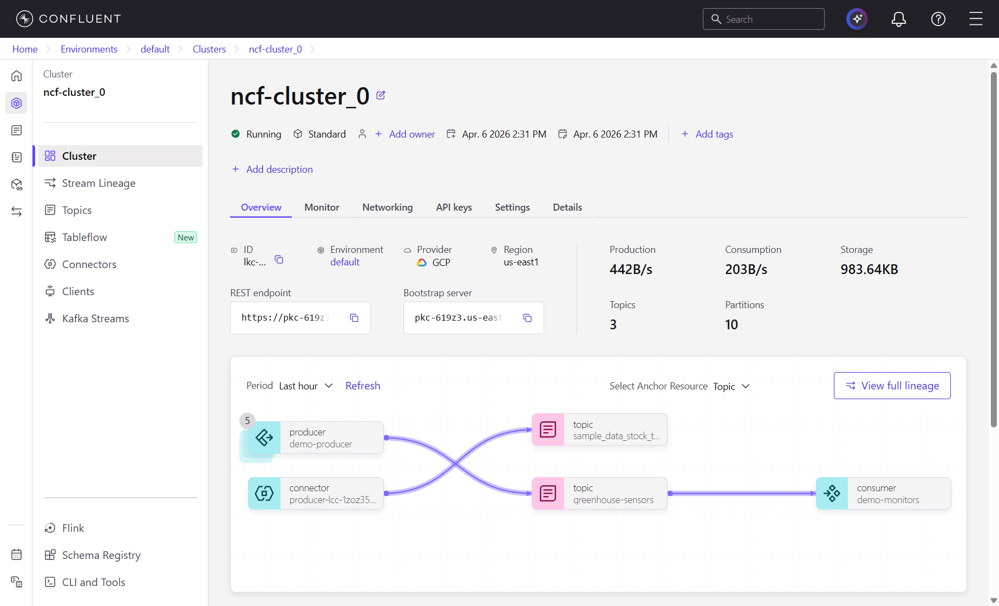
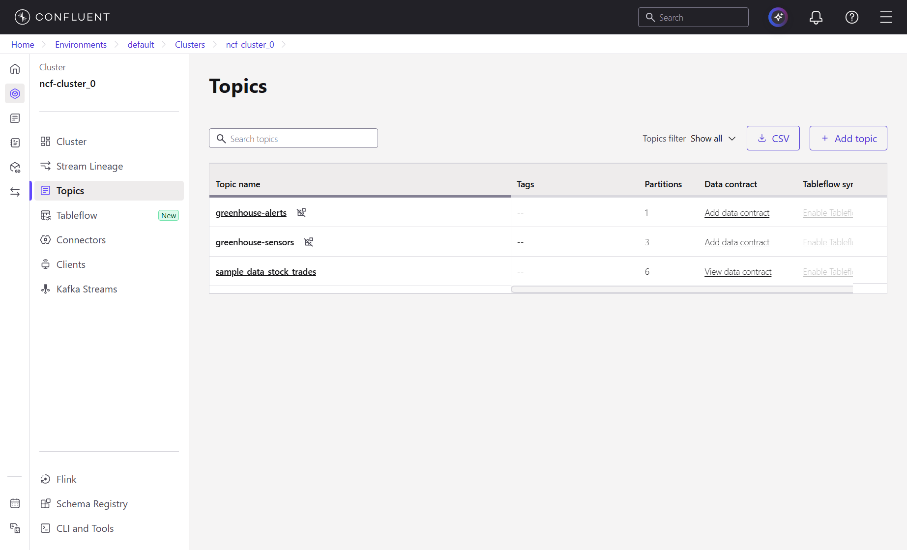
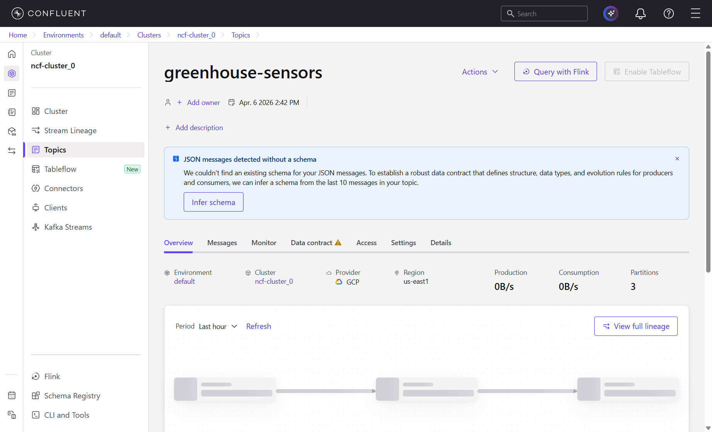
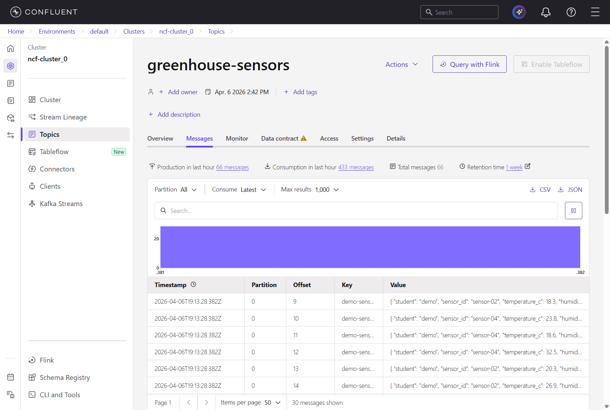
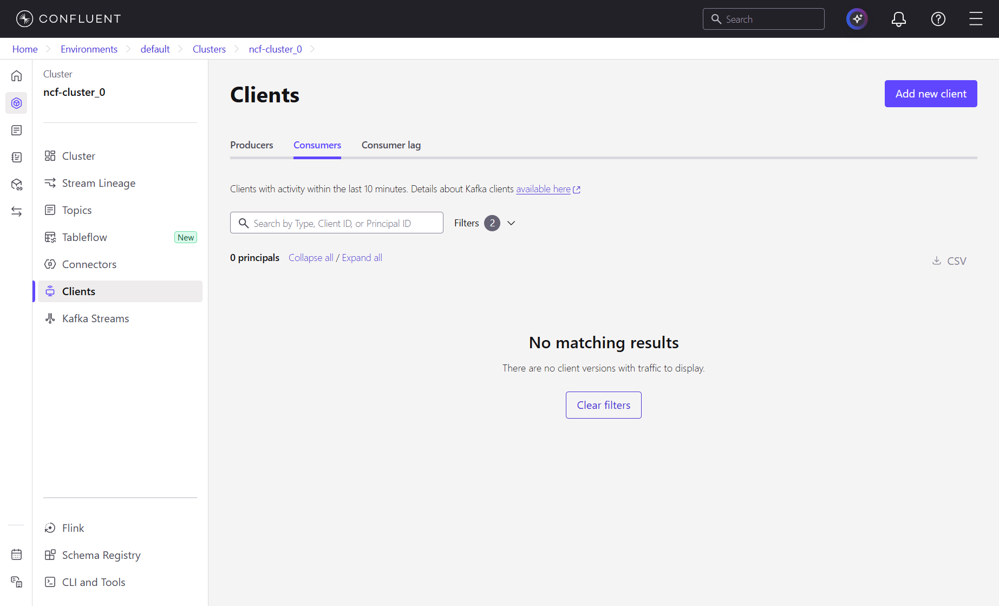
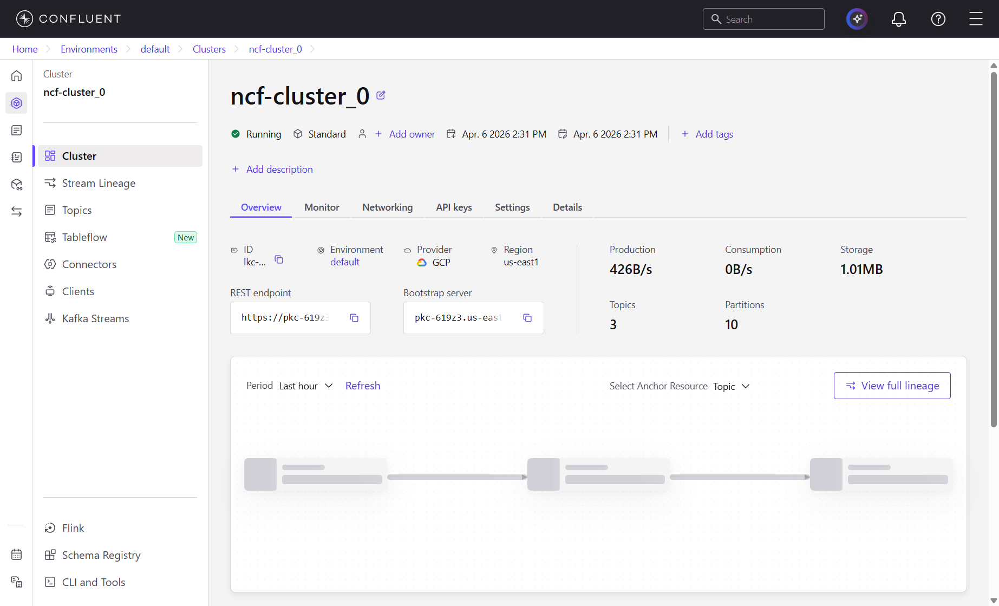
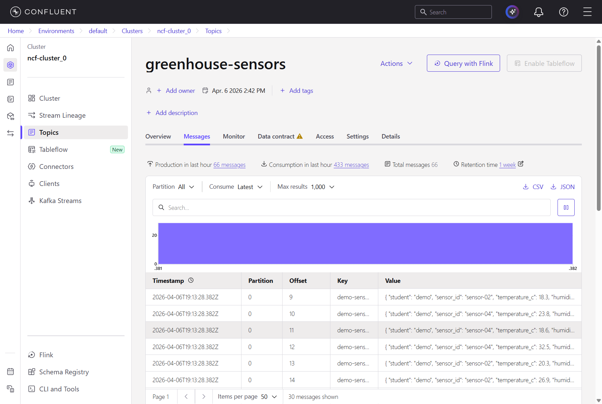
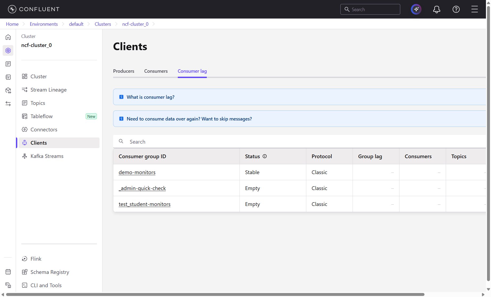

producer.py, consumer.py, kafka_config_example.py, requirements.txt
Apache Kafka is a distributed system that lets programs send and receive streams of messages in real time. Think of it as a durable, high-throughput message board: one program posts a message, and any number of other programs can read it -- seconds later or hours later. Unlike a traditional database, Kafka is optimized for continuous flow of data rather than request/response queries.
A topic is a named channel for a category of messages (for example, greenhouse-sensors). Every topic is split into one or more partitions. Each partition is an ordered, append-only sequence of messages. When a message is written to a partition, Kafka assigns it a sequential number called an offset (0, 1, 2, ...). Offsets never reuse or go backward within a partition, so they act as a permanent "position marker."
Kafka guarantees ordering within a single partition, but not across partitions. If two messages land in partition 0 and partition 1 respectively, Kafka makes no promise about which one is read first. This is the fundamental trade-off: more partitions give you more parallelism, but you lose global ordering.
A producer is any program that writes messages to a topic. When you produce a message, you can optionally attach a key. Kafka hashes the key and uses the result to choose which partition gets the message (specifically: hash(key) mod number_of_partitions). This means messages with the same key always land in the same partition, which guarantees they are read in order. If you produce without a key, Kafka distributes messages across partitions in a round-robin fashion.
A consumer is any program that reads messages from a topic. Consumers do not "pop" messages off a queue -- the messages stay in Kafka. Instead, each consumer tracks its position using offsets: "I have read up to offset 47 in partition 0."
Consumers are organized into consumer groups. Within a group, Kafka divides the partitions among the members so that each partition is read by exactly one consumer. This is how you scale reads: if a topic has 3 partitions and your group has 3 consumers, each consumer handles one partition. If you add a 4th consumer to the same group, it sits idle because there are no spare partitions to assign.
If a consumer in the group crashes or disconnects, Kafka detects this (via missed heartbeats) and rebalances: it redistributes the orphaned partitions among the remaining consumers. This typically takes a few seconds.
A completely separate consumer group reads the topic independently from the beginning. Groups do not interfere with each other -- each group maintains its own set of offsets.
A broker is a single Kafka server that stores partitions and serves reads and writes. A production Kafka cluster has many brokers (the class cluster has 30). Each partition is stored on one broker (with replicas on others for durability). When your producer or consumer connects, it first contacts a bootstrap server to discover which broker owns which partition, then talks directly to the right broker for each operation.
Our cluster uses SASL_SSL authentication. This is two things combined: TLS (the same encryption your browser uses for HTTPS) to encrypt all traffic, and SASL/PLAIN to verify identity using a username and password (called an API Key and API Secret in Confluent Cloud). Every connection is both encrypted and authenticated. The configuration values security.protocol, sasl.mechanisms, sasl.username, and sasl.password in your config file control this.
A useful way to picture this: a topic is a book, each partition is a chapter, and the offset is a page number. Producers append pages to chapters. Consumers in the same group divide up the chapters among themselves so nobody reads the same page twice. A second group can read the entire book independently from the start. Brokers are the library shelves that hold the chapters.
I have provisioned a shared Kafka cluster on Confluent Cloud and invited you with your @ncf.edu email. You do not need to create your own account, enter a credit card, or set up any infrastructure. The API credentials for the Python scripts will be provided during the lab session.
Check your @ncf.edu email for an invitation from Confluent Cloud. Click the link to set a password and activate your account. Once activated, log in at confluent.cloud.
You have been given DataDiscovery access, which lets you browse topics, inspect messages, view consumer groups and lag, and explore schemas -- everything you need for this lab. You cannot create or delete topics, clusters, or API keys.
After logging in, click Environments → default → ncf-cluster_0 to open the shared cluster.
The class cluster is a Standard-tier Confluent Cloud cluster running on Google Cloud Platform. Here are the details you will need:
| Property | Value |
|---|---|
| Cluster Name | ncf-cluster_0 |
| Cluster ID | lkc-z2r253 |
| Provider / Region | GCP us-east1 |
| Bootstrap Server | pkc-619z3.us-east1.gcp.confluent.cloud:9092 |
| REST Endpoint | https://pkc-619z3.us-east1.gcp.confluent.cloud:443 |
Bootstrap Server (port 9092) is the address your Kafka producers and consumers connect to. When a client first connects, it contacts this bootstrap address to discover the full list of brokers in the cluster. After that initial handshake the client talks directly to whichever broker owns the partition it needs. Every Producer() and Consumer() constructor in the code uses this address. The protocol is the native Kafka binary protocol over TLS (SASL_SSL).
REST Endpoint (port 443) is an HTTP/JSON gateway to the same cluster. You can use it from any language or tool that speaks HTTP -- for example, curl or a web browser. It is handy for quick inspection or when you cannot install a native Kafka library. In this lab you will use the native Python client, so you will not call the REST endpoint directly, but it is good to know it exists. The Confluent Cloud UI uses it under the hood.
Cluster ID (lkc-z2r253) is the unique identifier Confluent Cloud assigns to this cluster. You will see it in the UI URL and in API responses. It is not used in the Python client configuration, but you need it if you ever use the Confluent CLI or REST API to manage the cluster programmatically.
Now that you are logged in, take a few minutes to explore the Confluent Cloud console. Below is a tour of the key sections with screenshots from the live cluster.
The overview dashboard shows real-time production and consumption throughput graphs, total storage used, and the number of topics and partitions. This is the first page you see when you open the cluster.

The Topics page lists every topic in the cluster. You can see the topic name, number of partitions, and the number of messages. Our two lab topics (greenhouse-sensors and greenhouse-alerts) are listed here alongside the sample data topic that came with the cluster.

Click a topic name to see its detail page with partition counts, throughput, and configuration (retention period, cleanup policy, etc.):

The Messages tab is a live message browser. You can see each message's partition, offset, key, and full JSON value. This is extremely useful for debugging -- you can verify your producer is writing the data you expect:

In Confluent Cloud, consumer group information is found under Clients in the left sidebar. This section has three tabs: Producers, Consumers, and Consumer lag. The Consumers tab shows which consumer groups have connected, their partition assignments, and member details. The Consumer lag tab shows how far behind each group is -- a lag of zero means the consumer is fully caught up. You will use these views in Exercise 3 to observe rebalancing when consumers join or leave a group.

The Settings page (left sidebar > Cluster Settings) shows the Bootstrap Server and REST Endpoint values from the table above, along with networking and security configuration. This is where you come to find connection details if you ever need them.
API Keys are managed under Cluster Settings > API Keys tab. Your shared key was created here with Kafka cluster scope, meaning it can produce, consume, and perform topic operations on this cluster -- but it cannot manage billing, environments, or other Confluent Cloud resources.
Connectors are managed integrations that stream data into or out of Kafka without writing custom producer or consumer code. They solve a common problem: most organizations need to move data between Kafka and external systems (databases, cloud storage, search engines, data warehouses). Instead of writing and maintaining a custom Python script for each integration, you configure a connector and it handles serialization, error recovery, offset tracking, and scaling automatically.
Connectors come in two types:
Some of the most commonly used connectors in production:
| Connector | Type | What It Does |
|---|---|---|
| Debezium (PostgreSQL, MySQL) | Source | Captures every INSERT, UPDATE, and DELETE from a database table and streams them into Kafka as change events. This is called Change Data Capture (CDC) and is how companies keep Kafka in sync with their operational databases in real time. |
| Amazon S3 Sink | Sink | Writes Kafka messages to S3 as Parquet, Avro, or JSON files. Used to build data lakes -- Kafka handles the real-time flow, S3 provides cheap long-term storage. |
| Elasticsearch Sink | Sink | Indexes Kafka messages into Elasticsearch for full-text search and log analytics dashboards (e.g., Kibana). |
| BigQuery / Snowflake Sink | Sink | Loads Kafka messages directly into a cloud data warehouse for analytics and BI reporting. |
| HTTP Source | Source | Polls a REST API on a schedule and writes the responses into a Kafka topic. Useful for ingesting data from third-party APIs that do not support streaming natively. |
| JDBC Source | Source | Polls a relational database table for new or changed rows and writes them to Kafka. Simpler than CDC but only detects changes at poll intervals, not in real time. |
Why use connectors instead of writing your own code? Three reasons: (1) connectors handle fault tolerance automatically -- if the connector crashes, it restarts from the last committed offset without losing or duplicating data; (2) connectors scale horizontally by running multiple tasks in parallel; and (3) connectors are battle-tested by the community and Confluent, so you avoid reinventing error handling, schema evolution, and backpressure logic that every integration eventually needs.
We do not use connectors in this lab (you write your own producer and consumer to understand how Kafka works at the code level), but in a production pipeline you would almost always prefer a connector for standard integrations.
Two topics have been created for this lab:
| Topic | Partitions | Purpose |
|---|---|---|
| greenhouse-sensors | 3 | Raw sensor telemetry (temperature, humidity). The producer writes here; the consumer reads here. |
| greenhouse-alerts | 1 | High-temperature alerts generated by your consumer in Exercise 4. |
Three partitions allow up to three consumers in the same consumer group to read in parallel -- one partition per consumer. This is the setup you will use in Exercise 3 to observe partition rebalancing. The greenhouse-alerts topic has only 1 partition because alert volume is low and ordering matters.
pip install -r requirements.txt
Copy kafka_config_example.py to _kafka_config.py:
# Windows (PowerShell) Copy-Item kafka_config_example.py _kafka_config.py # macOS / Linux cp kafka_config_example.py _kafka_config.py
Open _kafka_config.py in your editor. The bootstrap server is already filled in. Replace the two placeholder values with the API Key and API Secret provided by your instructor:
KAFKA_CONFIG = {
"bootstrap.servers": "pkc-619z3.us-east1.gcp.confluent.cloud:9092",
"security.protocol": "SASL_SSL",
"sasl.mechanisms": "PLAIN",
"sasl.username": "PASTE_API_KEY_HERE", # ← paste the shared Key
"sasl.password": "PASTE_API_SECRET_HERE", # ← paste the shared Secret
}
The bootstrap server address points to the class cluster on GCP us-east1. The security.protocol is set to SASL_SSL, which means every connection is encrypted with TLS and authenticated with the SASL/PLAIN mechanism (username + password over an encrypted channel). This is how all Confluent Cloud clusters authenticate.
The file _kafka_config.py starts with an underscore, so it is automatically excluded from git by this repository's .gitignore rules. Never commit credentials to version control. These are shared class credentials -- do not distribute them outside this course.
Everyone in the class is producing to and consuming from the same Kafka topic. To avoid stepping on each other, every command in this lab requires a --student YOURNAME flag (use your first name, lowercase). This does three things:
alice-monitors) so your offset tracking is independent of other students.python producer.py --student YOURNAME --count 20
Replace YOURNAME with your first name in lowercase (e.g., --student alice). Use the same name in every command for the rest of the lab. Every message is tagged with your name so you can identify your own data in the shared topic.
Watch the delivery reports. Each line shows the topic, partition number, and offset. Messages route to different partitions based on your name and sensor ID key.
In your browser, open the Confluent Cloud console. Navigate to Topics → greenhouse-sensors → Messages. You should see your 20 JSON messages (and messages from other students) spread across the 3 partitions. Each message shows its partition number, offset, key, and full JSON value.
--count 10? Do the new messages start at offset 0 or continue from the previous offset? What does that tell you about how Kafka stores data?producer.py and find the producer.produce() call. What would happen if you removed the key= argument? (Try it and compare the partition distribution.)python consumer.py --student YOURNAME
The consumer reads from auto.offset.reset: earliest, so it replays all existing messages. By default it only shows messages tagged with your student name (other students' messages are silently skipped). Each line shows [partition:offset], sensor ID, temperature, humidity, and a running average.
To see everyone's messages, add the --all flag: python consumer.py --student YOURNAME --all
Open a second terminal and run:
python producer.py --student YOURNAME --count 10
Switch back to the consumer terminal. Your new messages appear in near-real-time — even though the broker is in the cloud.
[partition:offset] numbers in the output. Are the offsets always increasing across all partitions, or only within each partition? What does this tell you about Kafka's ordering guarantees?Ctrl-C) and restart it. Does it re-read all the old messages, or does it pick up where it left off? (Hint: look at enable.auto.commit in the code -- when this is True, the consumer periodically saves its current offset position to Kafka, so on restart it knows where it stopped.)When multiple consumers read the same topic, the result depends entirely on whether they share a consumer group name or use different group names. These are two fundamentally different patterns, and understanding the difference is the entire point of this exercise.
When three consumers join the same group, Kafka divides the partitions among them. Each message is delivered to exactly one consumer in the group. This is how you scale processing: if one consumer cannot keep up, you add more consumers to the same group and they share the load.
Topic: greenhouse-sensors (3 partitions)
Group: alice-team
Partition 0 --> Consumer A (Terminal 1)
Partition 1 --> Consumer B (Terminal 2)
Partition 2 --> Consumer C (Terminal 3)
Result: Each message is processed exactly once.
The work is split three ways.
If Consumer B crashes, its partition is reassigned
to A or C (this is "rebalancing").
When two consumers use different group names, each group independently reads every message in the topic. The groups do not know about each other. Each maintains its own set of offsets. This is how you let multiple independent applications consume the same data stream without interfering with each other.
Topic: greenhouse-sensors (3 partitions)
Group: alice-monitors Group: alice-analytics
Partition 0 --> Consumer X Partition 0 --> Consumer Y
Partition 1 --> Consumer X Partition 1 --> Consumer Y
Partition 2 --> Consumer X Partition 2 --> Consumer Y
Result: Consumer X sees ALL messages.
Consumer Y also sees ALL messages (independently).
They track offsets separately.
Stopping one has no effect on the other.
In production, Pattern A is how you build scalable data processing pipelines (e.g., three workers ingesting sensor data into a database). Pattern B is how you let multiple systems consume the same event stream independently (e.g., one group writes to a database, another triggers real-time alerts, a third feeds a dashboard -- all reading the same Kafka topic without interfering with each other).
You will now try both patterns yourself.
Open three terminal windows. In each one, start a consumer with the same --group suffix. The group name becomes YOURNAME-team, so your three consumers share partitions without interfering with other students:
# Terminal 1 python consumer.py --student YOURNAME --group team --all # Terminal 2 python consumer.py --student YOURNAME --group team --all # Terminal 3 python consumer.py --student YOURNAME --group team --all
Use --all here so you can see messages arriving across all partitions regardless of who produced them. Now produce a burst from a fourth terminal:
python producer.py --student YOURNAME --count 60 --burst
Each consumer should receive messages from a different subset of partitions. Look at the [partition:offset] numbers at the start of each line. With 3 partitions and 3 consumers, each consumer handles exactly one partition -- you should see Terminal 1 only showing [0:...], Terminal 2 only showing [1:...], and Terminal 3 only showing [2:...] (the specific assignment may vary, but each terminal should show only one partition number).
Kill one of the three consumers (Ctrl-C). The broker detects the departure and rebalances: the remaining two consumers split three partitions between them. Produce another burst and observe the redistribution.
--group team). Does it receive any messages? Why? (Think about the relationship between the number of partitions and the number of consumers in a group.)--group team consumers. Now start a consumer with a different group suffix (--group solo). Your actual group name becomes YOURNAME-solo instead of YOURNAME-team. Does this new consumer receive messages that were already consumed by the team group? Why? (Refer back to Pattern B in section 5.0 -- does a new group start from scratch or share offsets with existing groups?)Same group = split the work (Pattern A). Different groups = independent copies (Pattern B). Within a group, partitions are divided so no message is processed twice. Across groups, each group independently tracks its own offsets and sees the full topic. This is one of Kafka's most powerful design decisions -- it lets you build both parallel processing and fan-out architectures on the same data stream.
Modify consumer.py to print a warning when any sensor reports a temperature above 30.0 C:
*** ALERT: sensor-03 reported 32.4 C (threshold: 30.0) ***
Modify producer.py to include a light_lux field in each reading (a random float between 200 and 8000). Update the consumer to display it. The old consumer code still works even though the message format changed — this is forward compatibility via optional fields.
A second topic called greenhouse-alerts (1 partition) has already been created on the cluster. When the consumer detects a high temperature, have it produce an alert message to greenhouse-alerts. This creates a two-stage streaming pipeline: raw telemetry → alert generation.
Submit your modified consumer.py with the alert threshold (6.1) and the alert-producing logic (6.3). Include a screenshot of at least 3 alert messages appearing in the Confluent Cloud console on the greenhouse-alerts topic.
Before moving to the stretch goal, take a moment to look at what your pipeline looks like from the Confluent Cloud console. After producing and consuming messages in the exercises above, the dashboard now shows real activity.
The overview dashboard shows spikes in both Production (bytes/sec written by your producer) and Consumption (bytes/sec read by your consumer). In a production system, these graphs help you spot traffic surges, detect when consumers fall behind, or confirm that a deployment is actually processing data:

The message viewer shows every message that landed in greenhouse-sensors. Notice each row shows the partition, offset, key (your student name + sensor ID), and the full JSON value. You can see your "student" field in each payload, and how messages from the same key consistently land in the same partition:

Under Clients > Consumer lag, you can see every consumer group that has connected to the cluster. Each group lists its members, which partitions they are assigned, their current offset, and their lag (the difference between the latest offset in the partition and the offset the consumer has read up to). A lag of zero means the consumer is fully caught up. A growing lag means the consumer is falling behind -- either it is too slow, or it has stopped:

Every concept from the lab is visible here: the producer wrote messages with keys, Kafka hashed those keys to assign partitions, the consumer group divided partitions among its members, and each consumer tracked its position using offsets. The Confluent Cloud console is just a window into the same data structures your Python code interacts with.
In a production data platform, you rarely consume Kafka with standalone Python scripts. Instead, a streaming engine continuously reads from Kafka and writes the data into durable, queryable tables. Spark Structured Streaming is a streaming engine built into Apache Spark that reads from sources like Kafka and writes to sinks like Delta Lake tables. Delta Live Tables (DLT) is a Databricks feature that wraps Structured Streaming in a declarative Python API: instead of writing the read/write loop yourself, you define each table as a function and DLT manages the streaming pipeline for you.
The code below shows how you would connect this lab's Kafka topic to a Delta table using DLT. The readStream call opens a continuous connection to the Kafka cluster. Every new message that arrives is parsed from JSON and appended to a Bronze (raw) table. In a Medallion architecture, downstream Silver tables apply data quality rules (e.g., reject temperatures below -40 C), and Gold tables produce aggregations ready for dashboards and reports.
import dlt
from pyspark.sql.functions import col, from_json, schema_of_json
SAMPLE = '{"sensor_id":"s","temperature_c":0.0,"humidity_pct":0.0,"timestamp":"t"}'
@dlt.table(
comment="Raw sensor readings ingested from Kafka",
table_properties={"quality": "bronze"},
)
def bronze_sensors():
return (
spark.readStream
.format("kafka")
.option("kafka.bootstrap.servers", "pkc-619z3.us-east1.gcp.confluent.cloud:9092")
.option("kafka.security.protocol", "SASL_SSL")
.option("kafka.sasl.mechanism", "PLAIN")
.option("kafka.sasl.jaas.config",
"...PlainLoginModule required username='KEY' password='SECRET';")
.option("subscribe", "greenhouse-sensors")
.option("startingOffsets", "earliest")
.load()
.withColumn("parsed", from_json(col("value").cast("string"),
schema_of_json(SAMPLE)))
.select("parsed.*", "topic", "partition", "offset", "timestamp")
)
Databricks Community Edition does not support DLT pipelines. If you have access to a paid Databricks workspace, you can run this directly. Otherwise, treat this as a read-and-understand exercise — the pattern is what matters.
Once the Bronze table exists as a streaming Delta table, dbt can model it downstream with standard SQL transformations:
Sensors --produce--> Confluent Cloud --readStream--> DLT (Bronze)
|
DLT (Silver) -- quality rules
|
DLT (Gold) -- aggregations
|
dbt models -- business logic SQL
Because this is a shared class cluster, you do not need to delete any infrastructure. Just make sure you:
Ctrl-C in each terminal). Idle consumers still maintain heartbeats to the broker and consume connection slots._kafka_config.py if you are on a shared or public machine. The credentials give write access to the cluster.The instructor will tear down the cluster after the lab period ends.